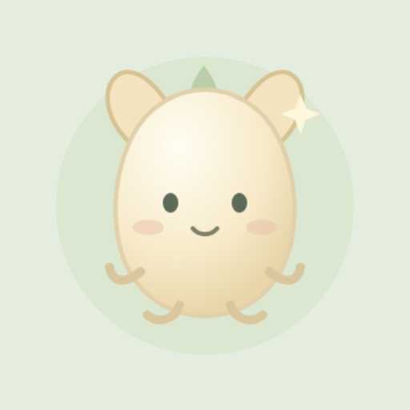
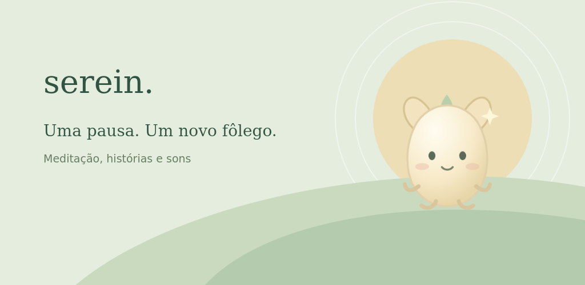
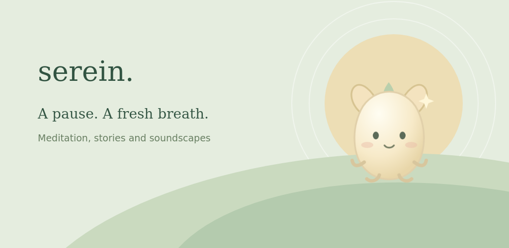
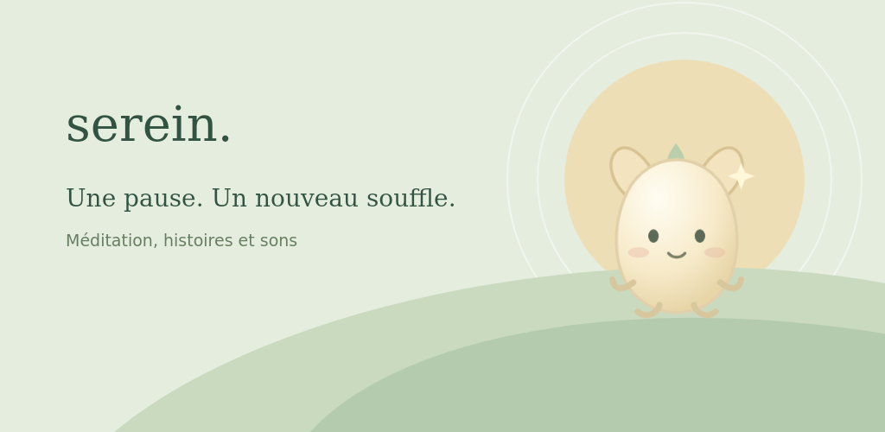

Serein — Kit Google Play
Artes da ficha e textos em cinco idiomas. Guia de publicação · Política de privacidade · Respostas de apoio
As imagens da interface abaixo são prévias web para revisão. Obter screenshots do Android de lançamento antes do envio. O APK atual é debug e usa API 35; publicar exige preparar release com API 36 ou superior, política pública e formulários da conta.
pt-BR

Serein: meditação e histórias
Meditações, histórias e sons para criar suas pausas, mesmo sem conexão
Descrição completa · Notas da versão
en-US

Serein: meditation and stories
Guided practices, stories and soundscapes for your pauses, even offline
Descrição completa · Notas da versão
fr-FR

Serein : méditation et récits
Méditations, histoires et ambiances sonores pour vos pauses, même hors ligne
Descrição completa · Notas da versão
it-IT
Serein: meditazione e storie
Meditazioni, storie e suoni per le tue pause, anche senza connessione
Descrição completa · Notas da versão
es-ES
Serein: meditación e historias
Meditaciones, historias y sonidos para tus pausas, incluso sin conexión
Descrição completa · Notas da versão